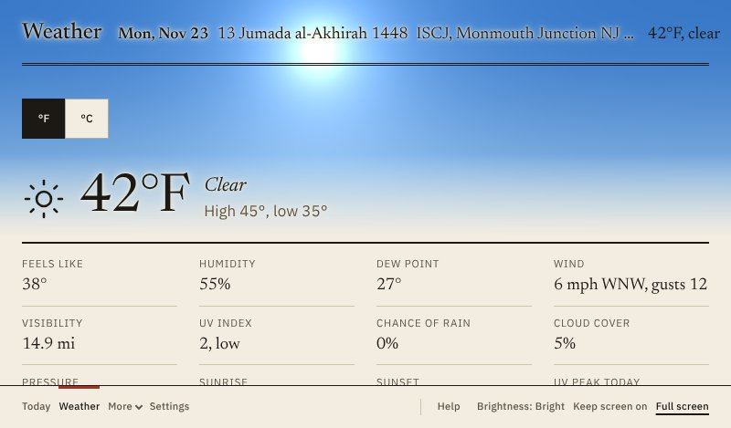
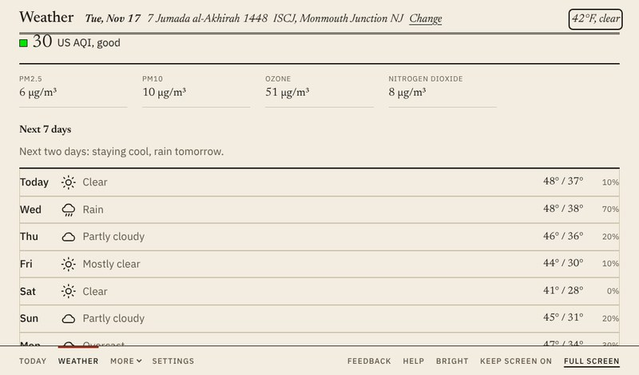

Chapter 9
Weather
The weather now, the week ahead, and what it will be like at each prayer time, for the place you set in chapter 2.
Now


- °F or °C: tap to switch.
- Now: the temperature, the sky, and today’s high and low, in front of today’s real sky: the sun on its path by day, and at night the stars and the moon at the Hijri date’s phase (at Darkest; on a lighter night page, the printed sky). It shows in the Printed timetable look, whatever the Weather background setting says, and scrolls away with the current weather.
- Details: feels like, humidity, wind, visibility, UV, chance of rain, sunrise, sunset and more.
Air and the week ahead


- Air quality, with a colour from good to unhealthy.
- Next 7 days, with a one-line summary of the next two days.
Below these are the next 24 hours, with the prayer times marked, and weather at prayer times: the temperature and chance of rain at each adhan. That helps when deciding whether to walk to the masjid.
Good to know
- The weather now also shows at the end of the date line on every screen. Tap it to come here. The Home screen also shows the weather at the next prayer, and a red line for any official weather warning (US only).
- Weather comes from Open-Meteo. If it cannot be reached, the page tries again every 15 minutes.